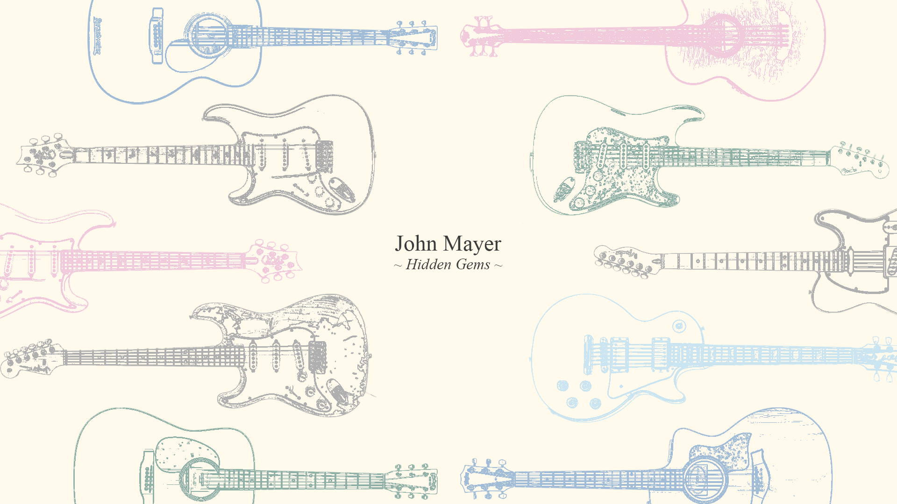

Home
Videos
Audio
Tabs

Your ultimate destination for exploring the hidden gems of John Mayer's musical journey.
Watch Videos
The #1 place for finding new music, and learning the blues.
Tab Sheets
Newsletter
Sign Up to receieve our weekly newsletter!
Subscribe